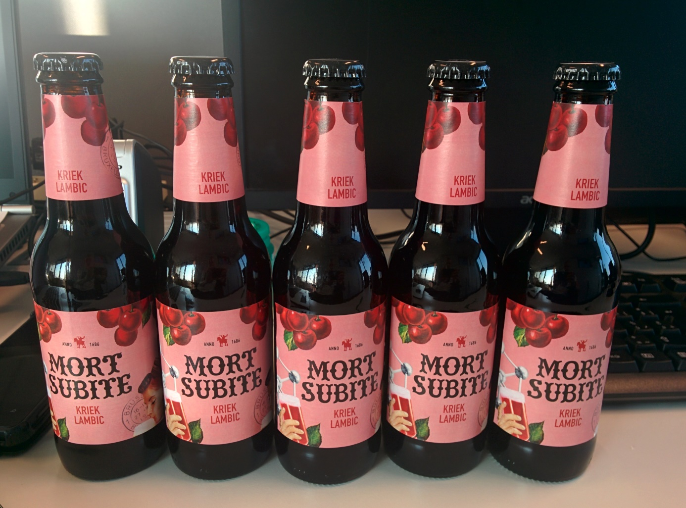
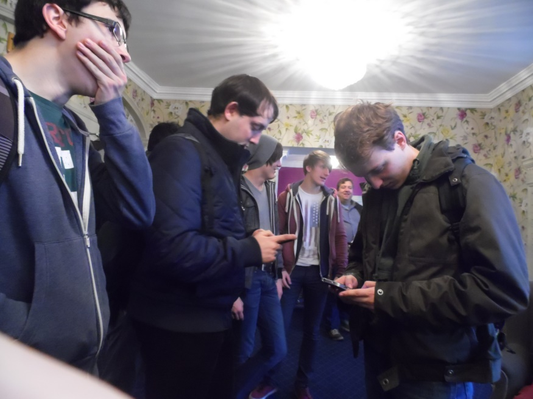
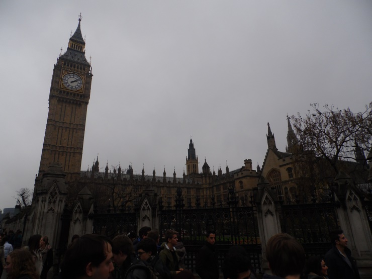
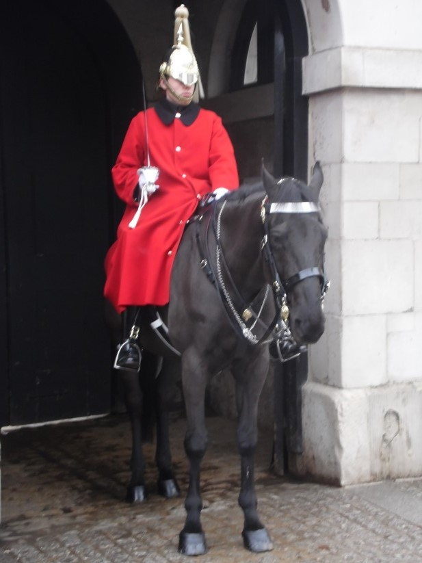
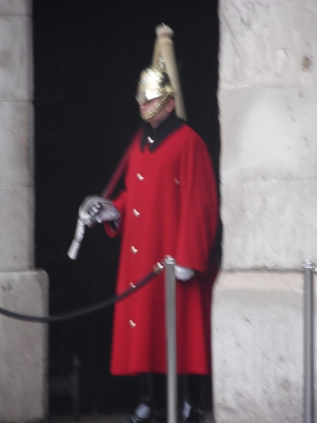
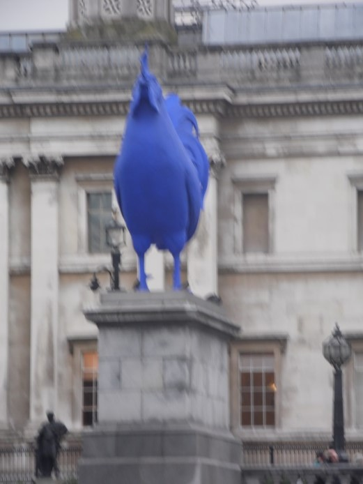
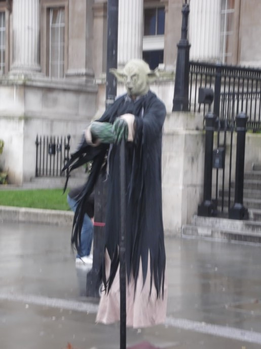
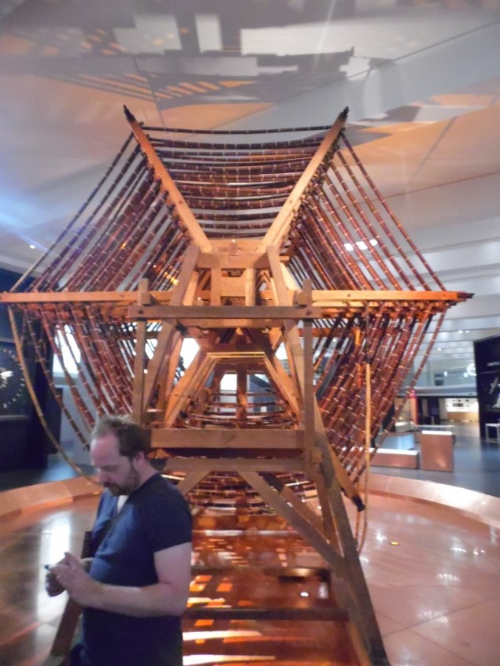
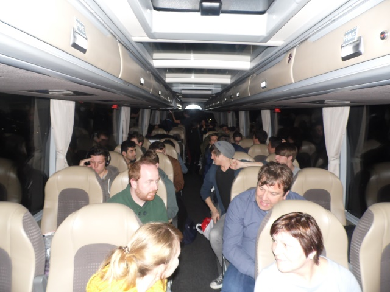
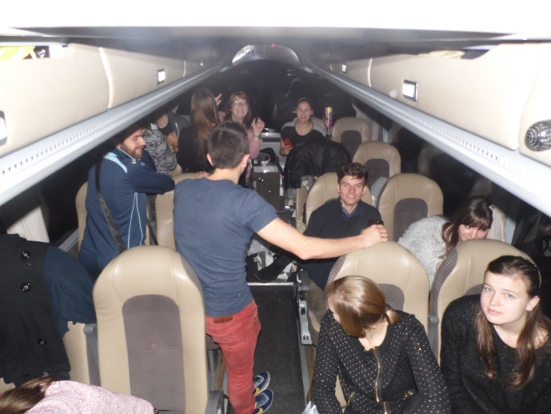

Stage blog 4
De 4de week en laatste week van de stage ging heel vlot, dit omdat ik me volledig heb ingewerkt en weet wat men taken zijn. De week is redelijk snel vooruit gevlogen net als elke stage week, dit omdat het er leerrijk en zeer leuk was. Deze week heb ik voornamelijk pc’s geswapt en vooral dinsdag waar ik er 6 op één voormiddag heb gedaan. Ik heb laptop ’s gestaged, maar voornamelijk laptop ’s geupdate zodat er altijd genoeg reserve laptop ’s lagen voor te wisselen moest het nodig zijn.
De nieuwe collega die deze week was gestart kwam ik goed mee overeen, heb dan ook soms taken met hem moeten doen zoals bv: een volledige toren plaatsen met schermen en alle toebehoren bij, aansluiten en zien dat alles werkt en ook checken of het pasgemaakte account van die persoon werkte. Dit ging allemaal vlot en zonder problemen.
Deze week is mijn leerkracht/stagebegeleider langs geweest voor mijn stage te bespreken met de stage mentor en mijzelf erbij. Ik heb bij alles redelijk goede commentaar gehad, buiten een paar werkpuntjes waar ik kan aan werken en opletten voor als ik vast ga werken.
Ik vond het daar echt een hele leuke en leerrijke stage plaats, ik heb er echt veel bijgeleerd en had het daar echt naar mijn zin. Ik vind het spijtig dat mijn stage gedaan is want wou er wel langer blijven. Met het afscheid nemen, wenste ze me allemaal veel succes nog met mijn studie dit jaar en zeiden ze van “hopelijk/misschien tot in de zomervakantie als je misschien hier vakantie werk kunt komen doen”. Lesly zei ook iets gelijkaardig maar zei er wel nog bij van misschien tot de volgende als er een vacature zou vrijkomen daar zodat ik er kan voor solliciteren dan.
Tot hier mijn laatste stage blog post, hopelijk komt er een vacature vrij zodat ik erop kan solliciteren en zou kunnen gaan werken. Nu sluit ik af en ga ik van de paasvakantie genieten, voor degene die ook vakantie hebben een prettige vakantie.
posted on 04/04/2015
Stage blog 3
Hier zijn we weer voor de derde blog over mijn stage. Zoals elke week nu al ging elke stage dag zeer snel en leerrijk voorbij, soms wou ik dat de dag iets langer kon duren.
Dagelijks ging ik in de namiddag de volle tapes vervangen door nieuwe tapes. Hier was een probleem dat er 2 tapes nooit inzaten, die aangegeven werden om eruit te halen. Dit kwam omdat er op de plaats van waar deze tapes normaal gezien staken, 2 andere tapes waren gestoken waardoor deze er niet uit konden.
Voor de calls van deze week die binnen kwamen heb ik een paar keer voor gehad dat er een frans sprekende aan de andere kant van de lijn was. Dus vroeg ik in mijn beste frans “une moment. Tu parle anglais?” waar ik meestal het antwoord “non” kreeg en ze verder gingen met hun uitleg. Als dit gebeurde zei ik op die moment “une moment. Je vous pasé mon collègue” dat vonden ze steeds in orde waarna mijn collega de call overnam.
Als ik door het gebouw liep voor iemand te gaan helpen dat op afstand niet ging had ik soms dat andere mensen mij toen ook aanspraken of even riepen. Omdat ze een probleem hadden met hun pc, deze mensen ging ik dan met alle plezier helpen.
De laptop ’s die geswapt werden gingen heel vlot en de mensen waren altijd heel vriendelijk. Ik heb zeker deze week 15 laptop ’s omgewisseld, dit duurt altijd 1 a 2 uurtjes omdat je alle bestanden moet overzetten en moet zien dat alles erop staat. Zodat de mensen geen gegevens kwijt zouden zijn.
Deze week heeft een collega mij toegevoegd op facebook, dit is wel handig als ik hem moet kunnen bereiken voor iets en dit dan de enigste oplossing is. Tijden de pauze praat ik met die collega al eens over van alles en nog wat, het meeste wel over games en auto’s.
posted on 29/03/2015
Stage blog 2
De 2de week van de stage gaat al vele vlotter, dit omdat ik me al volledig heb ingewerkt en weet wat men taken zijn. Ik heb een paar mensen gecontacteerd om een afspraak te maken voor hun oude laptop om te wisselen in een nieuwe, omdat de oude laptop ’s hun leasing afloopt in april. Tevens heb ik ook al een paar mensen hun laptop ’s omgewisseld en ervoor gezorgd dat alles erop stond van programma’s dat ze gebruiken en documenten die ze er al hadden opstaan.
Zoals vorige weeg gingen de dagen weeral vlot voorbij, om 9u beginnen en er om half 9 al zijn en om 5u gedaan en meestal blijven tot half 6 omdat het er zo leuk is. De dagen vlogen echt voorbij, de ene keer kijk je op je horloge en zie je dat het 10u is en even later kijk je er weer op en verschiet je dat het al half 2 is.
Het zijn echt toffe collega’s waar ik mee samen werk. Ze helpen me ook altijd heel goed als ik een vraag heb of vast zit en ze leggen zelfs meer uit dan ik vraag of beginnen plotseling iets uit te leggen. Dat vind ik zeer leuk want zo leer ik veel bij en hoe meer ik kan leren hoe beter.
Wat me opvalt en wat Lesly mij de eerste week al zei was dat ze snel weten dat je bij de IT hoort. Eerst wou ik het niet geloven, maar nu geloof ik hem volledig. Dan loop je rustig door het gebouw, spreken de mensen jou plotseling aan met de vraag: “je bent toch de nieuwe van IT hé?” en daarna hun pc probleem beginnen uit te leggen, of als je naar huis gaat en komt iemand tegen die ook naar huis gaat die dan zegt van: “aah, jij bent die nieuwe van IT”.
Ik heb het daar helemaal naar mijn zin, nog 2 weekjes en de stage zit erop. Dat vind ik wel spijtig want ik vind het daar tof en doe dit heel graag. Maar zolang de stage loopt met alle plezier daar gaan werken en zoveel mogelijk bijleren zodat ik dit in mijn latere leven mee kan nemen wat ik allemaal geleerd heb.
posted on 22/03/2015
Stage blog 1
De eerste stage dag begon al super, als eerst om 10u op stage moeten zijn. Daar een rondleiding gekregen, daarna uitleg over al hun systemen en al een beetje meegeholpen met de servicedesk. De rest van de dagen moest ik telkens om 9u beginnen, dit deed ik altijd met alle plezier omdat ik zoiets graag doe, ik was zelfs meestal een half uur te vroeg. Maar dat geeft niets, zo kon ik al beginnen met mijn taken voor die dag.
De eerste paar dagen heb ik al redelijk wat gedaan maar kreeg ik voornamelijk nog uitleg hoe alles werkte of wat ik moet doen. Het is een redelijk leuke stage, de mensen zijn altijd vriendelijk en als je bij mensen gaat helpen kan het zijn dat je al eens iets mee krijgt zoals bij promo dat ik een voetbal had gekregen van hun. Voor de rest heb ik deze week voornamelijk computers zitten stagen (imagen) en ze daarna updaten tot ze gebruiksklaar zijn. Teven heb ik ook elke dag volle tapes veranderd door lege tapes, tapes zijn harde schijven waar nog tape in zit.
Je kan hier altijd al eens lachen zoals deze vrijdag dat de fantasie van een paar op hol sloeg door de “KILLER DUCK” die in de vijver schuin beneden ons rondzwemt. Het leukste is dat je de mensen kan helpen en dat je daarna ziet dat ze tevreden en blij zijn met wat je voor hun gedaan hebt.
Deze week vond ik ook heel plezant ook omdat de tijd zo snel vooruit gaat omdat je werk doet dat je graag doet en deze vrijdag heb ik tevens nog iets leuk gekregen, dat iedereen van het bedrijf heeft gekregen. Dat leuks dat we gekregen hebben is “Mort Subite Kriek Lambic” dat we mee naar huis mogen nemen en van kunnen proeven.

posted on 15/03/2015
Blogpost about FOSDEM
On Saturday 31 of January till Sunday 1 of February we went to FOSDEM. This is a Free and Open source Software Developers' European Meeting. We went to there by train but thanks to an electric disruption in the metro of Antwerp almost everyone was too late, so we had to take a later train to there. When we arrived there in the morning we first picked a point where we were going to meet each other in the late afternoon (around 5 a 6 o’clock in the afternoon).
We went to different talks, that we chose the week before for our self. They were very interesting, some were more understandable then the other for us. The atmosphere with the class was good and we have amused us the whole trip. In the late afternoon we went to a restaurant “La Kasbah”, the food there was magnificent. After we ate our belly round, we went to an Irish pub to have a drink, after that we went to the hotel around 10 o’ clock in the afternoon otherwise we couldn’t check-in no more. In the hotel some stayed to made their tasks for school and other left the hotel to get a drink with our teacher.
The second day we went back to FOSDEM, we did some more interesting talks there about “OpenUI5” and “PHP it’s not just the code” and more. Around 4 pm we went back to the train to go home, we have amused us so hard and we could do this again.
posted on 12/02/2015
Requirements Bazaar
Deze talk ging over Requirements Bazaar, dit is van een paar studenten die dit hebben uitgewerkt. Het gaat over de eisen van de ontwerper en de eind gebruiker. Via deze weg kunnen ontwerpers van een programma of een site zien wat de eindgebruikers er van vinden of wat hun eisen zijn. Tevens kunnen ze dit ook gebruiken voor bugs die de eindgebruiker vind en meld op te lossen. Het is handig voor de ontwerper want zo kan de ontwerper meer tijd steken in het ontwerpen van het product in plaats van direct de hele tijd te gaan kijken wat de eisen zijn van de eind gebruiker.
Je kan via de site Requirements Bazaar alle bugs, fouten en dingen die verbetert kunnen worden tot zelfs tips melden op deze pagina en als ik bv een product heb gemaakt en ik doe mee aan Requirements Bazaar en mensen melden hier iets op over mijn product dat er iets fout loopt. Word dit rechtstreeks door gepushed naar mijn issue trackers. Zodat ik veel efficiënter dan deze problemen zou kunnen oplossen. Teven worden ook alle meldingen gerangschikt naar prioriteit, van of het éne probleem belangrijker is dan het anderen. Zo kunnen de belangrijkste problemen het snelste opgelost worden en zo kan je ook nog veel problemen vinden door communicatie met de eind gebruiker.
posted on 11/02/2015
visit to London
On Wednesday 26 November we left for London at 7am in the morning. It was a trip of 5 hours on a bus. In this 5 hours we drove to Calais, then the bus drove on the euro tunnel. When we arrived in Dover the bus drove of the train and then we went to Blackheath where our hotel was. Our hotel was a peaceful business hotel.

Some people of my class can’t miss their WIFI (Clarendon hotel)
We went by train from Blackheath to Charing Cross station (London), so we could start our guided tour around London. So if we had free time, we would know our way a bit in London. We also passed by the Houses of Parliaments with the beautiful “Big Ben”, it’s the biggest Ben I have seen so far.

House of parliaments & Big Ben
We also came by some peculiar people, when I think I had that job I would hate it because you need to stand somewhere or sit still on a horse for several hours. Not my thing because I can’t sit still for so long.


Guard standing and one on a horse. One of them probably thought “ooh god 5 more hours standing still till my shift is over”
In the evening we went to Harrods with our class most of the things were way too expensive. And we also went to Hamleys where all child – and adult dreams come true in the massive toy store with a basement, a ground floor and around a 5 floors above it with almost everything you like. After that we went to a pub to drink an English pint and then went back to the hotel. Ooh yea I forgot about it we also saw a large blue rooster and a large flying Yoda (star wars) look alike.


Blue rooster and the Yoda look alike
The second day we went to the science museum where we visited the expo’s about computers. I have learned much about it and it was very interesting to see old computers and things that go with it. It was fun to go to there, in the evening we went to Camden town and also ate fish and chips there.

Our teacher was also looking for internet to post something on social media
The last day we went back to London to shop a bit more and after that at 1pm we went back home by bus. It was the same as I told in the beginning but in reverse, but it we had much fun in the bus. I am glad I am back home with my family, but I miss London a bit.


Fun in the bus with the whole group that went to London
posted on 05/12/2014
Ervaringen en zelfreflectie 7CW: de eerste maanden
De eerste 2 maanden van het school jaar zijn al voorbij en we zijn net de 3de maand van het schooljaar gestart. De dagen gaan snel vooruit, alleen al omdat ik met zoveel interessante onderwerpen kennis maak, erover leer en leer toepassen.
Er zijn een paar onderwerpen/lessen/opdrachten die op het moment redelijk goed gaan, omdat ik daar al wat van weet of over heb opgezocht en er zijn natuurlijk andere die iets minder gaan, omdat ik daar nog niet zoveel kennis van heb. Maar dit is normaal, anders zou ik niet in deze richting of zelfs nog op school zitten als ik daarover niet wil bijleren. Je hebt nooit genoeg kennis en je kan altijd bijleren over iets, zelfs al weet je er heel veel van kan je er nog altijd over bijleren.
Ik vind het voornamelijk interessant als we het hebben over het maken van websites of over, hardware en servers. Die dingen doe ik dan ook liever dan sommige andere. Ik probeer me wel overal even goed voor in te zetten.
Met Frans heb ik nog wel problemen, maar dat zal stilaan verbeteren, want ik blijf me ervoor inzetten en ook door bijlessen bij te wonen. Op het moment vind ik van mezelf dat ik matige punten heb, maar ik ga zo goed mogelijk mijn best doen om dit te verbeteren en hogere punten te halen.
We hebben al heel veel geleerd, veel over servers, maar nog meer over websites (hoe ze in elkaar zitten, het gebruik/doel, hoe ze op te bouwen/te maken, het design ervan en het ontwerpen zelf van wat waar moet staan en hoe qua codes).
We hebben ook al een paar projecten gedaan in groep en ook al een project herhaald, maar dan met andere groepen. Zodat iedereen zijn ideeën en tips wat kon bundelen zodat we een beter resultaat kregen.
posted on 07/11/2014
First week of School
It was an intresting first week of school, where the teachers tested us to see what we are capable to. It was very nice to met people who has the same intrests. We are already mates and help eachother when we need some help. Most of all on this first week we learned more about making a website and what was the best site to make a portfolio in the begin. We also made a profile page in html to introduce us for everyone of the class. First we Brainstormed in the class in groups of 3 men to see what you need to put on your website, the look of it and how you can create. We gonna learn more in the rest of the year, but now it is still a little bit basic because it is the introduction week142. I chose this because I wanted to learn more about: PC's, how to make and maintain a server and how to make/design/maintain a website by myself.
posted on 05/09/2014